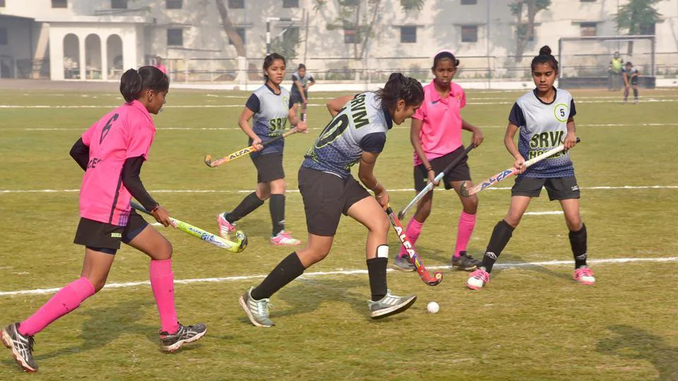
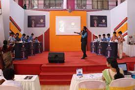

Passed 100% students
Our school truly believes that good education plays a vital role in building a bright future for our children. Therefore, here we are committed to providing an atmosphere to our students where they all can learn new educational things every day, learn about teamwork, and also importantly right from wrong.Our students have not only excelled in academics but are also very good at extra-curricular activities like sports, drama, artworks, organizing school events, and many other things. Not all of the students will have achieved A’s or B’s in every discipline, though hopefully, they will report to you the positive lessons they’ve learned in every field and the ones they’ve excelled at. They have not only made us proud but brought accolades to our school and have given it a good reputation in our ( geographic region ), thus adding extra feather to its cap.
Students ranked in state level
Our school has constantly received attention from local media and has hosted the visits of some famous ex-pupils, from well-known institutions on TV, national as well as overseas. Most of the visitors have even returned to pay multiple visits to our school. Feedback received from the visiting guests has always been positive. This certainly wouldn’t have been possible without our committed staff members and responsible students of this school.
District level sports championship
Extracurricular activities and sports teach students many important life lessons. It teaches discipline, focus, dedication, hard work, commitment, teamwork. And it is our responsibility as adults to value sportsmanship and award the courage of students to take action rather than focusing on winning or losing.Our school truly believes that good education plays a vital role in building a bright future for our children.
State level Quize championship
Today, quizzes are interactive platforms where students are not participating to take home a prize or get famous overnight, but to gain knowledge, seek opportunities to excel beyond.Since questions are based out-of-syllabus and require critical thinking and extensive research, students get into the habit of innovative learning from an early age. Students need to form teams while participating in quizzes, giving them an opportunity to hone their teamwork skills.During interviews, recruiters have found that Indian students are good in theoretical knowledge but are not privy to industry knowledge because of the current pattern of curriculum. Hence, there is still a huge gap in preparing our students for the market.
State level Award winning for spreading education in rural area
Our school truly believes that good education plays a vital role in building a bright future for our children. Our school has constantly received attention from local media and has hosted the visits of some famous ex-pupils, from well-known institutions on TV, national as well as overseas. Most of the visitors have even returned to pay multiple visits to our school. Feedback received from the visiting guests has always been positive. This certainly wouldn’t have been possible without our committed staff members and responsible students of this school.